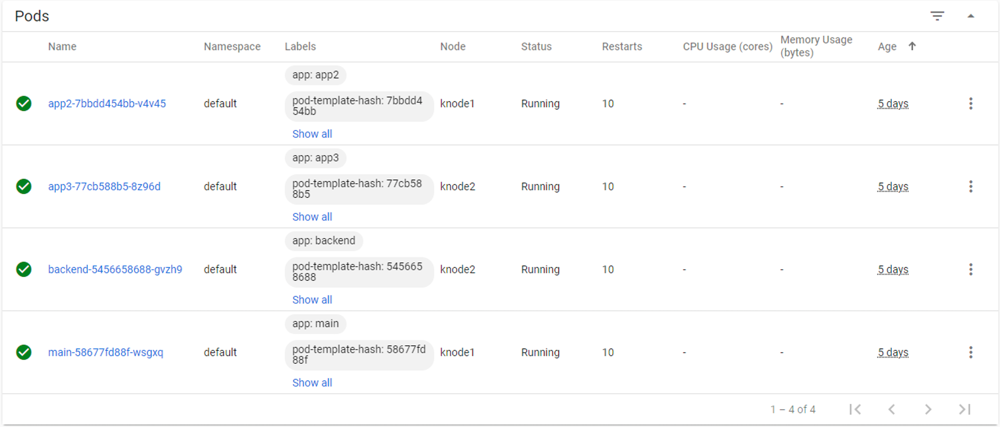
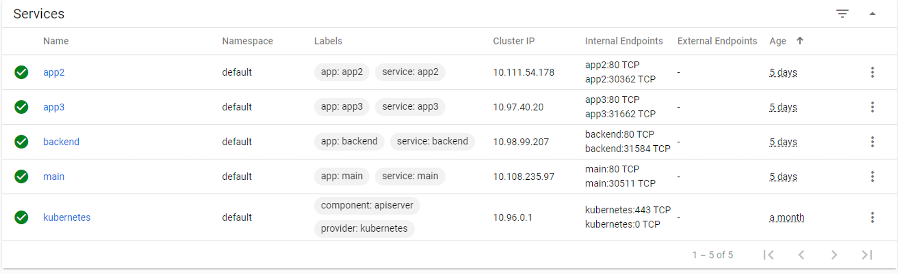

Step 1 - Deploy and publish Arcadia Finance application in Kubernetes¶
It’s time to deploy Arcadia Finance application :)
Deploy Arcadia Application with kubectl command
With Kubernetes, there are several ways to deploy containers (pods). One way is to use kubectl command with a YAML deployment file.
I prepared this YAML file below (this is only for the main app container). You can have a look, and see it will deploy containers from my Gitlab.com repo.
apiVersion: v1
kind: Service
metadata:
name: main
namespace: default
labels:
app: main
spec:
type: NodePort
ports:
- name: main-80
nodePort: 30511
port: 80
protocol: TCP
targetPort: 80
selector:
app: main
---
apiVersion: apps/v1
kind: Deployment
metadata:
name: main
namespace: default
labels:
app: main
version: v1
spec:
replicas: 1
selector:
matchLabels:
app: main
version: v1
template:
metadata:
labels:
app: main
version: v1
spec:
containers:
- env:
- name: service_name
value: main
image: registry.gitlab.com/arcadia-application/main-app/mainapp:latest
imagePullPolicy: IfNotPresent
name: main
ports:
- containerPort: 80
protocol: TCP
---
Note
To make it simple, it deploys the container from gitlab.com repo, and a service. The service is used later on by the NGINX Plus Ingress Controller.
Steps :
 
- SSH (not WebSSH) to CICD Server
- Run this command
kubectl apply -f /home/ubuntu/Arcadia_k8S/all_apps.yaml- RDP to the jumphost with
user:useras credentials- Open Chrome
- Open Kubernetes Dashboard bookmark (if not already opened)
- Click
skipon the logon page- You should see the services and the pods
Warning
Arcadia Application is running but not yet available for the customers. We need to publish it.
Video of this module